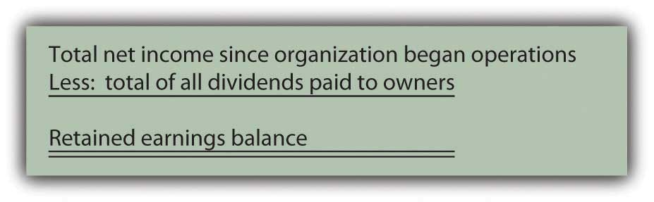
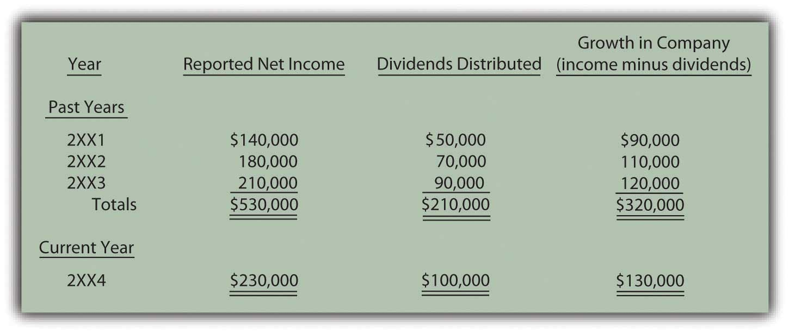

Joe introduces Chapter 3 "In What Form Is Financial Information Actually Delivered to Decision Makers Such as Investors and Creditors?" and speaks about the course in general.
At the end of this section, students should be able to meet the following objectives:
Question: The revenues, expenses, assets, and liabilities reported by an organization provide data that are essential for decision making. The informational value of these figures enables a thorough analysis of an organization and its financial health and future prospects. How do outsiders learn of these amounts? How are financial data actually conveyed to interested parties? For example, a company such as Marriott International Inc. (the hotel chain) has possibly millions of current and potential shareholders, creditors, and employees. How does such a company communicate vital financial information to all the groups and individuals that might want to make some type of considered evaluation?
Answer: Businesses and other organizations periodically produce financial statements that provide a formal structure for conveying financial information to decision makers. Smaller organizations distribute such statements each year, frequently as part of an annual report prepared by management. Larger companies, like Marriott International, issue yearly statements but also prepare interim statements, usually on a quarterly basis.Financial statements for many of the businesses that have their capital stock traded publicly on stock exchanges are readily available on corporate Web sites. For example, the statements released by Marriott International can be located through the following path. The financial statements issued by most large companies will be found by using similar steps.• Go to http://www.marriott.com.• Click on “About Marriott” (probably at the bottom of the homepage).• Click on “Investor Relations.”• Click on “Financial Information.”• Click on “Financial Reports & proxy.”• Click on “Annual Report” (for the year desired). Regardless of the frequency of preparation, financial statements serve as the vehicle to report all the monetary balances and explanatory information required according to the rules and principles of U.S. generally accepted accounting principles (U.S. GAAP). Based on these standards, such statements are intended as a fairly presented portrait of the organization—one that contains no material misstatements. In simple terms, a company’s revenues, expenses, assets, and liabilities are reported to outsiders by means of its financial statements.
Typically, a complete set of financial statements produced by a business includes four separate statements along with comprehensive notes. When studied with knowledge and understanding, a vast array of information becomes available to aid decision makers who want to predict future stock prices, cash dividend payments, and cash flows.
The four financial statements prepared by Marriott International as of January 2, 2009, and the year then ended were presented in just four pages of its annual report (pages forty-three through forty-six) whereas the notes accompanying those statements made up the next twenty-seven pages. Although decision makers often focus on a few individual figures found in financial statements, the vast wealth of information provided by the notes should never be ignored.
Link to multiple-choice question for practice purposes: http://www.quia.com/quiz/2092635.html
Question: Assume that a financial investor is analyzing the latest income statement prepared by a company in hopes of deciding whether to buy its capital stock or, possibly, loan money to the company. Or, perhaps, a current employee must decide whether to stay with the company or take a job offer from another organization. Both of these individuals want to assess the company’s financial health and future prospects. Certainly, all the available financial statements need to be studied but, initially, this person is looking at the income statement. What types of financial data will be available on a typical income statement such as might be produced by a business like IBM, Apple, Papa John’s, or Pizza Hut?
Answer: The main content of an income statement is rather straightforward: a listing of all revenues earned and expenses incurred by the reporting organization during the period specified. As indicated previously in Chapter 2 "What Should Decision-makers Know So That Good Decisions Can Be Made about an Organization?", revenue figures disclose increases in net assets (assets minus liabilities) that were created by the sale of goods or services resulting from the primary operations of the organization. For IBM, revenues are derived from the sale and servicing of computers and the like (a total of nearly $104 billion in 2008) while, for Papa John’s International, the reported revenue figure (a bit over $1.1 billion) measures the sale of pizzas and related items.
Conversely, expenses are decreases in net assets incurred by a reporting company in hopes of generating revenues. For example, salaries paid to sales people for the work they have done constitute an expense. The cost of facilities that have been rented is also an expense as is money paid for utilities, such as electricity, heat, and water.
For example, IBM reported selling, general, and administrative expenses for 2008 of $23.4 billion. That was just one category of its expenses disclosed within the company’s income statement.Financial information reported by large publicly traded companies tends to be highly aggregated. Thus, the expense figure shown by IBM is a summation of many somewhat related expenses. Those individual balances would be available within the company for internal decision making. During the same period, Papa John’s reported salaries and benefits as an expense for its domestic company-owned restaurants of $158.3 million. Financial accounting focuses on providing information about an organization and both of these figures should help decision makers begin to glimpse a portrait of the underlying company. Accounting is often said to provide transparency—the ability to see straight through the words and numbers to gain a vision of the company and its operations.
Question: Is nothing else presented on an income statement other than revenues and expenses?
Answer: An income statement also reports gains and losses for the same period of time. A gain is an increase in the net assets of an organization created by an occurrence outside its primary or central operations. A loss is a decrease in net assets from a similar type of incidental event.
When Apple sells a computer to a customer, it reports revenue but if the company disposes of a piece of land adjacent to a warehouse, it reports a gain (if sold above cost) or a loss (if sold below cost). Selling computers falls within Apple’s primary operations whereas selling land does not. If Pizza Hut sells a pepperoni pizza, the transaction brings in assets. Revenue has been earned and should be reported. If this same company disposes of one of its old stoves, the result is reflected as either a gain or loss. Pizza Hut is not in the business of selling appliances. This classification split between revenues/expenses and gains/losses helps provide decision makers with a clearer portrait of what actually happened to the company during the reporting period.
An example of an income statement for a small convenience store is shown in Figure 3.1 "Income Statement". Note that the name of the company, the identity of the statement, and the period of time reflected are apparent. Although this is only an illustration, it is quite similar to the income statements created by virtually all business organizations in the United States and many other countries.
Figure 3.1 Income Statement

Link to multiple-choice question for practice purposes: http://www.quia.com/quiz/2092602.html
Question: A review of this sample income statement raises a number of questions. The meaning of balances such as salary expense, rent expense, advertising expense, and the like are relatively clear. These figures measure specific outflows or decreases in the company’s net assets that were incurred in attempting to generate revenue. However, the largest expense reported on this income statement is called cost of goods sold. What does the $900,000 cost of goods sold figure represent?
Answer: This convenience store generated sales of $1.4 million in Year 2XX4. Customers came in during that period of time and purchased merchandise at its sales price. That is the first step in the sale and is reflected within the revenue balance. The customers then took these goods with them and left the store; this merchandise no longer belongs to Davidson Groceries. In this second step, a decrease occurred in the company’s net assets. Thus, an expense has occurred. As the title implies, “cost of goods sold” (sometimes referred to as “cost of sales”) is an expense reflecting the cost of the merchandise that a company’s customers purchased during the period. It is the amount that Davidson paid for inventory items, such as apples, bread, soap, tuna fish, and cheese, that were then sold.
Note that the timing of expense recognition is not tied to the payment of cash but rather to the loss of the asset. As a simple illustration, assume Davidson Groceries pays $2 in cash for a box of cookies on Monday and then sells it to a customer for $3 on Friday. The income statement will show revenue of $3 (the increase in the net assets created by the sale) and cost of goods sold of $2 (the decrease in net assets resulting from the sale). Both the revenue and the related expense are recorded on Friday when the sale took place and the inventory was removed.
The difference in revenue and cost of goods sold is often referred to as the company’s gross profitDifference between sales and cost of goods sold; also called gross margin or markup., gross marginDifference between sales and cost of goods sold; also called gross profit or markup., or markupDifference between sales price and cost of goods sold on an item of inventory; also called gross profit or gross margin.. It is one of the reported figures studied carefully by decision makers. For this year, Davidson Groceries earned a gross profit of $500,000 ($1.4 million in revenues less $900,000 cost of goods sold). Its gross profit was 35.7 percent of sales ($500,000/$1.4 million).
For the year ending January 30, 2009, Lowe’s Companies Inc., the home improvement company, reported net sales revenues of $48.2 billion along with cost of sales of $31.7 billion. Thus, Lowe’s earned a gross margin (the company’s term) during that period of $16.5 billion. Sales of merchandise ($48.2 billion) exceeded the cost of those same goods ($31.7 billion) by that amount. Its gross profit percentage was 34.2 percent ($16.5 million/$48.2 million). Any potential investor or creditor will find such numbers highly informative especially when compared with the company’s prior years or with competing enterprises. For example, for the year ending February 1, 2009, the Home Depot Inc., a major competitor of Lowe’s Companies, reported net sales of $71.3 billion, cost of sales of $47.3 billion, and gross profit (the company’s term) of $24.0 billion. Its gross profit percentage was 33.7 percent ($24.0 million/$71.3 million). Such information allows decision makers to compare these two companies and their operations.
Link to multiple-choice question for practice purposes: http://www.quia.com/quiz/2092636.html
Question: In Figure 3.1 "Income Statement", revenues and expenses are listed first to arrive at an operating income figure. That is followed by gains and losses. This sequencing is appropriate since revenues and expenses relate to the primary or central operations of the business and gains and losses are created by more incidental events. Why then is income tax expense listed last, by itself, on the income statement and not with the other expenses?
Answer: State and federal income taxes cost businesses in the United States considerable sums of money each year. Exxon Mobil Corporation reported income taxes of $36.5 billion at the bottom of its 2008 income statement. The income tax figure is segregated in this manner because it is not an expense in a traditional sense. As previously described, an expense—like cost of goods sold, advertising, or rent—is incurred in order to generate revenues. Income taxes do not create revenues at all. Instead, they are caused by the company’s revenues and related profitability. Although referring to income taxes as an expense is common, probably a more apt title is “income taxes assessed by government.” The financial impact is the same as an expense (an outflow or decrease in net assets); thus, “income tax expense” is often used for labeling purposes. However, because the nature of this “expense” is different, the reported income tax figure is frequently isolated at the bottom of the income statement, separate from true expenses.
Financial information can be gathered about an organization but the resulting figures must then be structured in some usable fashion to be conveyed to interested decision makers. Financial statements serve this purpose. A typical set of financial statements is made up of an income statement, statement of retained earnings, balance sheet, statement of cash flows, and explanatory notes. The income statement reports revenues from sales of goods and services as well as expenses such as rent expense and cost of goods sold. Gains and losses that arise from incidental activities of a company are also included on the income statement but separately so that the income generated from primary operations is apparent. Income tax expense is reported at the bottom of the income statement because it is actually a government assessment rather than a true expense.
At the end of this section, students should be able to meet the following objectives:
Question: Previously, the term “asset” was defined as a future economic benefit owned or controlled by a reporting company. On an income statement, items such as rent and advertising are listed as expenses. Why are such costs not grouped with the assets on the balance sheet? For example, the rent paid for a building could provide a probable future economic benefit for the reporting organization but it is included in Figure 3.1 "Income Statement" as an expense. The same is true for advertising. How does a company determine whether a cost represents an asset or an expense?
Answer: Drawing a distinction that allows a cost to be classified as either an asset or an expense is not always easy for an accountant. If a company makes a $1,000 rent payment, an expense might have been incurred because an outflow of an asset has taken place. However, the cost of this rent could also be shown on the balance sheet as an asset if it provides future economic benefits.
A cost is identified as an asset if the benefit clearly has value in generating future revenues for the company whereas an expense is a cost that has already helped earn revenues in the past.
With an asset, the utility will be consumed in the year. With an expense, the utility has already been consumed. To illustrate, assume that on December 31, Year One, a company pays $1,000 for rent on a building used during the previous month. The benefit gained from occupying that space has already occurred. Use of the building helped the company generate revenue during December. The outflow of this money is reflected on the income statement as a rent expense. The benefit is now in the past.
If on that same day, another $1,000 is paid to rent this building again during the upcoming month of January Year Two, the acquired benefit relates directly to the future. Until consumed, this second cost should be shown on the balance sheet as a $1,000 asset (referred to as prepaid rent).
When a cost is incurred, the accountant must investigate to determine when the related benefit is expected. This timing—which is guided by U.S. GAAP—indicates whether an asset should be recognized (shown on the balance sheet) or an expense (reported on the income statement).
Link to multiple-choice question for practice purposes: http://www.quia.com/quiz/2092637.html
Question: A business or other organization can face many complicated situations. At times, the decision as to whether a specific cost will generate revenue in the future (and is reported as an asset) or has already helped create revenue in the past (an expense) is difficult. When an accountant encounters a case that is “too close to call,” what reporting is appropriate? For example, assume that a company has agreed to pay $24,000 but officials cannot ascertain the amount of the related benefit that has already occurred versus the amount that will take place in the future. When delineation between an asset and an expense appears to be impossible, what is reported?
Answer: Being an accountant is a relatively easy job when financial events are distinct and clearly understood. Unfortunately, in real life, situations often arise where two or more outcomes seem equally likely. The distinction raised in this question between an asset and an expense is simply one of numerous possibilities where multiple portraits could be envisioned. At such times, financial accounting has a long history of following the principle of conservatismPreference of accountants to avoid making an organization look overly good; when faced with multiple reporting options that are equally likely, the worse possible outcome is reported to help protect the decision maker from being too optimistic..
The conservative nature of accounting influences many elements of U.S. GAAP and must be understood in order to appreciate the meaning of the financial information that is conveyed about an organization. Simply put, conservatism holds that whenever an accountant faces two or more equally likely possibilities, the one that makes the company look worse should be selected. In other words, financial accounting attempts to ensure that a reporting organization never looks significantly better than it actually is.
If a cost has been incurred that might have either a future value (an asset) or a past value (an expense), the accountant always reports the most likely possibility. That is the only appropriate way to paint a portrait of an organization that is the fairest representation. However, if neither scenario appears more likely to occur, the cost is classified as an expense rather than an asset because of the principle of conservatism. Reporting a past benefit rather than a future benefit has a detrimental impact on the company’s appearance to an outside party. This handling reduces the reported net income as well as the amount shown as the total of the assets.
The principle of conservatism can be seen throughout financial accounting. When the chance of two possibilities is the same, accounting prefers that the more optimistic approach be avoided.
Question: Why does conservatism exist in financial accounting? Companies must prefer to look as successful as possible. Why does a bias exist for reporting outcomes in a negative way?
Answer: Accountants are well aware that the financial statements they produce are relied on by decision makers around the world to determine future actions that will place monetary resources at risk. For example, if a company appears to be prosperous, an investor might decide to allocate scarce cash resources to obtain shares of its capital stock. Similarly, a creditor is more willing to make a loan to a company that seems to be doing well economically.
Such decision makers face potential losses that can be significant. Accountants take their role in this process quite seriously. As a result, financial accounting has traditionally held that the users of financial statements are best protected if the reporting process is never overly optimistic in picturing an organization’s financial health and future prospects. Money is less likely to be lost if the accountant paints a portrait that is no more rosy than necessary. The practice of conservatism is simply an attempt by financial accounting to help safeguard the public.
The problem that can occur when a company appears excessively profitable can be seen in the downfall of WorldCom where investors and creditors lost billions of dollars. A major cause of this accounting scandal, one of the biggest in history, was the fraudulent decision by members of the company’s management to record a cost of nearly $4 billion as an asset rather than as an expense. Although any future benefit resulting from these expenditures was highly doubtful, the cost was reported to outsiders as an asset. Conservatism was clearly not followed.
Consequently, in its financial statements, WorldCom appeared to have more assets and be much more profitable than was actually the case. Investors and creditors risked their money based on the incorrect information they had received. Later, in 2002, when the truth was discovered, the stock price plummeted and the company went bankrupt. Even if the decision had been close as to whether these costs represented assets or expenses, the practice of conservatism would have dictated the need to record them as expenses to prevent an overly optimistic picture of the company and its financial health.
Link to multiple-choice question for practice purposes: http://www.quia.com/quiz/2092638.html
Question: Previously, the term “dividends” was introduced and discussed. Dividend distributions reduce the net assets of a company. In Figure 3.1 "Income Statement", a number of expenses are listed but no dividends are mentioned. Why are dividend payments not included as expenses on an income statement?
Answer: Dividends are not expenses and, therefore, must be omitted in creating an income statement. Such payments obviously reduce the amount of net assets owned or controlled by a reporting company. However, they are not related in any way to generating revenues. A dividend is a reward distributed by a company (through the decision of its board of directors) to the owners of its capital stock. Thus, a dividend is a sharing of profits and not a cost incurred to create revenues.
In Figure 3.1 "Income Statement", Davidson Groceries reports net income for the year of $230,000. The board of directors might look at that figure and opt to make a cash dividend distribution to company owners. That is one of the most important decisions for any board. Such payments usually please the owners but reduce the size of the company and—possibly—its future profitability.
An income statement reports revenues, expenses, gains, and losses. Dividend distributions do not qualify and must be reported elsewhere in the company’s financial statements.
Link to multiple-choice question for practice purposes: http://www.quia.com/quiz/2092622.html
Question: The final figure presented on the income statement is net income. This balance reflects the growth in a company’s net assets during the period resulting from all revenues, expenses, gains, and losses. In evaluating the operations of any company, that figure seems to be incredibly significant. It reflects the profitability for the period. Is net income the most important number to be found in a set of financial statements?
Answer: The net income figure reported for any business organization is an eagerly anticipated and carefully analyzed piece of financial information. It is the most discussed number disclosed by virtually any company. However, financial statements present a vast array of data and the importance of one balance should never be overemphasized. A portrait painted by an artist is not judged solely by the small section displaying the model’s ear but rather by the representation made of the entire person. Likewise, only the analysis of all information conveyed by a complete set of financial statements enables an interested party to arrive at the most appropriate decisions about an organization.
Some creditors and investors seek shortcuts when making business decisions rather than doing the detailed analysis that is appropriate. Those individuals often spend an exorbitant amount of time focusing on reported net income. Such a narrow view shows a fundamental misunderstanding of financial reporting and the depth and breadth of the information being conveyed. In judging a company’s financial health and future prospects, an evaluation should be carried out on the entity as a whole. Predicting stock prices, dividends, and cash flows requires a complete investigation. That is only possible by developing the capacity to work with all the data presented in a set of financial statements. If a single figure could be used reliably to evaluate a business organization, creditors and investors would never incur losses.
Conservatism is an often misunderstood term in financial reporting. Despite a reputation to the contrary, financial accounting is not radically conservative. However, when two reporting options are equally likely, the one that makes the company look best is avoided. In that way, the portrait created of a company is less likely to be overly optimistic so that decision makers are protected. Losses are less likely to occur. For example, expenses refer to costs that had value in the past while assets reflect future economic benefits. If this distinction cannot be drawn for a particular cost, it should be reported as an expense. That assignment reduces both reported income and assets. The resulting net income figure is useful in evaluating the financial health and prospects of a company but no single figure should be the sole source of information for a decision maker.
At the end of this section, students should be able to meet the following objectives:
Question: The second financial statement is known as the statement of retained earnings.As indicated earlier, many companies actually report a broader statement of changes in stockholders’ equity to present details on all the accounts appearing in the stockholders’ equity section of the balance sheet. At this initial point in the coverage, focusing solely on retained earnings makes the learning process easier.The term retained earnings has not yet been introduced. What information does a retained earnings balance communicate to an outside decision maker? For example, on January 31, 2009, Barnes & Noble reported retained earnings of nearly $721 million, one of the larger amounts found in the company’s financial statements. What does that figure tell decision makers about this bookstore chain?
Answer: Retained earnings is one of the most misunderstood accounts in all of financial reporting. In simplest terms, this balance is merely the total amount of net income reported by a company since it first began operations, less all dividends paid to stockholders during that same period. Thus, the figure provides a measure of the profits left in a business throughout its history to create growth.
Figure 3.2
When a company earns income, it becomes larger because net assets have increased. Even if a portion of the profits is later distributed to shareholders as a dividend, the company has grown in size as a result of its own operations. The retained earnings figure informs decision makers of the amount of that internally generated expansion. The reported balance answers the question: How much of the company’s net assets have been derived from operations during its life?
If a company reports net income of $10,000 each year and then pays a $2,000 dividend to its owners, it is growing in size at the rate of $8,000 per year. After four years, for example, $32,000 ($8,000 × four years) of its net assets were generated by its own operating activities. That information is communicated through the retained earnings balance.
As of January 31, 2009, Barnes & Noble reported total assets of $3.0 billion and liabilities of $2.1 billion. Thus, the company had net assets of $900 million. It held that many more assets than liabilities. Those additional assets did not appear by magic. They had to come from some source. One of the primary ways to increase the net assets of a company is through profitable operations. The balance for retained earnings shown by Barnes & Noble at this time lets decision makers know that approximately $721 million of its net assets were generated by the net income earned since the company’s inception, after all dividend distributions to shareholders were subtracted.
Link to multiple-choice question for practice purposes: http://www.quia.com/quiz/2092623.html
Question: In Figure 3.1 "Income Statement", Davidson Groceries calculated its net income for 2XX4 as $230,000. Assume that this company began operations on January 1, 2XX1, and reported the following balances over the years:
Figure 3.3
How is this information reported? What is the structure of the statement of retained earnings as it appears within a company’s financial statements?
Answer: In its three prior years of existence, Davidson Groceries’ net assets increased by a total of $320,000 as a result of its operating activities. As can be seen here, the company generated total profit during this period of $530,000 while distributing dividends to shareholders amounting to $210,000, an increase of $320,000. Net assets rose further during the current year (2XX4) as Davidson Groceries made an additional profit (see also Figure 3.1 "Income Statement") of $230,000 but distributed $100,000 in dividends.
Figure 3.4 "Statement of Retained Earnings" shows the format by which this information is conveyed to the decision makers who are evaluating Davidson Groceries.
Figure 3.4 Statement of Retained Earnings

Link to multiple-choice question for practice purposes: http://www.quia.com/quiz/2092624.html
Question: In the information given about Barnes & Noble, the company reported holding net assets of $900 million but only about $721 million of that amount was generated through operations as shown by its retained earnings balance. Clearly, additional sources must have helped the company attain its growth in size. Increases in net assets of a company are not the result of magic or miracles. Other than through operations, how else does a company derive its net assets?
Answer: Beyond operations (as reflected by the retained earnings balance), a company accumulates net assets by receiving contributions from its owners in exchange for capital stock.As with many aspects of the coverage at this introductory stage, other events can also impact the reported total of a company’s net assets and will be discussed in later chapters. The two sources here—capital stock and retained earnings—are shown by all corporations and are normally significantly large amounts. This is the other major method by which Barnes & Noble was able to gather its $900 million in net assets. On a balance sheet, the measure of this inflow is usually labeled something like capital stockOwnership (equity) shares of stock in a corporation that are issued to raise financing for capital expenditures and operations., common stockA type of capital stock that is issued by every corporation; it provides rights to the owner that are specified by the laws of the state in which the organization is incorporated., or contributed capitalAmounts invested in a corporation by individuals or groups in order to attain ownership interests; balance is reported within stockholders’ equity section of balance sheet to indicate the amount of the net assets that came from the owners.. The reported amount indicates the portion of the net assets that came into the business directly from stockholders.
The amount of a company’s net assets is the excess of its assets over its liabilities. Two reported balances indicate the primary source of those net assets:
Companies that seek to grow must be able to generate resources from owners, operations, or both.
Question: A corporation issues (sells) ownership shares to investors. The source of the resulting inflow of assets into the business is reflected on its balance sheet by the reporting of a capital stock (or contributed capital) balance. Thus, over its life, Motorola has received assets of $7.8 billion from stockholders in exchange for capital stock. Does the company receive money in this way when shares are sold each day on the New York Stock Exchange, NASDAQ (National Association of Securities Dealers Automated Quotation Service), or other stock exchanges?
Answer: No, purchases and sales on stock markets normally occur between investors and not with the company. Only the initial issuance of the ownership shares to a stockholder creates the inflow of assets reported by the company’s capital stock or contributed capital account.
To illustrate, assume that Investor A buys capital stock shares directly from Business B for $179,000 in cash. This transaction increases the net assets of Business B by that amount. The source of the increase is communicated to decision makers by adding $179,000 to the capital stock balance reported by the company. Subsequently, these shares may be exchanged between investors numerous times without any additional financial impact on Business B. For example, assume Investor A later sells the shares to Investor Z for $200,000 using a stock market such as the New York Stock Exchange. Investor A earns a $21,000 gain ($200,000 received less $179,000 cost) and Investor Z has replaced Investor A as an owner of Business B. However, the financial condition of the company has not been affected by this new exchange. Thus, the capital stock balance only measures the initial investment contributed directly to the business.
The source of a company’s net assets (assets minus liabilities) is of interest to outside decision makers. The reported retained earnings figure indicates the amount of these net assets that came from the operations of the company. This growth in size was internally generated. Retained earnings is all the net income earned since operations began less all dividend distributions. Net assets can also be derived from contributions to the company made by parties seeking to become owners. The capital stock (or contributed capital) balance measures this source of net assets. To impact the company, the assets must come directly from the owners. Hence, exchanges between investors on a stock exchange do not affect the company’s net assets or its financial reporting.
At the end of this section, students should be able to meet the following objectives:
Question: The third financial statement is the balance sheet. If a decision maker studies a company’s balance sheet (on its Web site, for example), what information can be discovered?
Answer: The primary purpose of a balance sheet is to report an organization’s assets and liabilities at a particular point in time. The format is quite simple. All assets are listed first—usually in order of liquidityLiquidity refers to the ease with which assets can be converted into cash. Thus, cash is normally reported first followed by investments in stock that are expected to be sold soon, accounts receivable, inventory, and so on.—followed by the liabilities. A picture is provided of each future economic benefit owned or controlled by the company (its assets) as well as its debts (liabilities).
A typical balance sheet is reported in Figure 3.5 "Balance Sheet" for Davidson Groceries. Note that the assets are divided between current (those expected to be used or consumed within the next year) and noncurrent (those expected to remain within the company for longer than a year). Likewise, liabilities are split between current (to be paid during the next year) and noncurrent (not to be paid until after the next year). This labeling aids financial analysis because Davidson Groceries’ current liabilities ($57,000) can be subtracted from its current assets ($161,000) to arrive at a figure often studied by interested parties known as working capital ($104,000 in this example). The current assets can also be divided by current liabilities ($161,000/$57,000) to determine the company’s current ratio (2.82 to 1.00), another figure calculated by many decision makers as a useful measure of short-term operating strength.
The balance sheet shows the company’s financial condition on one specific date. All the other financial statements report events occurring over a period of time (often a year or a quarter). The balance sheet discloses assets and liabilities as of the one specified date.
Figure 3.5 Balance SheetAs will be discussed in detail later in this textbook, noncurrent assets such as buildings and equipment are initially recorded at cost. This figure is then systematically reduced as the amount is moved gradually each period into an expense account over the life of the asset. Thus, balance sheet figures for these accounts are reported as “net” to show that only a portion of the original cost still remains recorded as an asset. This shift of the cost from asset to expense is known as depreciation and mirrors the using up of the utility of the property. On this company’s income statement—Figure 3.1 "Income Statement"—assume that depreciation for the period made up a portion of the “other” expense category.

Link to multiple-choice question for practice purposes: http://www.quia.com/quiz/2092603.html
Question: Considerable information is included on the balance sheet presented in Figure 3.5 "Balance Sheet". Assets such as cash, inventory, and land provide future economic benefits for a company. Liabilities for salaries, insurance, and the like reflect debts that are owed at the end of year. The $179,000 capital stock figure indicates the amount of assets that the original owners contributed to the business. The retained earnings balance of $450,000 was computed earlier in Figure 3.4 "Statement of Retained Earnings" and identifies the portion of the net assets generated by the company’s own operations over the years. For convenience, a general term such as “stockholders’ equity” or “shareholders’ equity” encompasses the capital stock and the retained earnings balances.
Why does the balance sheet balance? This agreement cannot be an accident. The asset total of $1,206,000 is exactly the same as the liabilities ($577,000) plus the two stockholders’ equity accounts ($629,000—the total of capital stock and retained earnings). Thus, assets equal liabilities plus stockholders’ equity. What creates that equilibrium?
Answer: The balance sheet will always balance unless a mistake is made. This is known as the accounting equationAssets = liabilities + stockholders’ equity. The equation balances because all assets must have a source: a liability, a contribution from an owner (contributed capital), or from operations (retained earnings).:
assets = liabilities + stockholders’ equity.Or if the stockholders’ equity account is broken down into its component parts,
assets = liabilities + capital stock + retained earnings.This equation stays in balance for one simple reason: assets must have a source. If a business or other organization has an increase in its total assets, that change can only be caused by (a) an increase in liabilities such as money being borrowed, (b) an increase in capital stock such as additional money being contributed by stockholders, or (c) an increase created by operations such as a sale that generates a rise in net income. There are no other ways to increase assets.
One way to understand the accounting equation is that the left side (the assets) presents a picture of the future economic benefits that the reporting company holds. The right side provides information to show how those assets were derived (from liabilities, from investors, or from operations). Because no assets are held by a company without a source, the equation (and, hence, the balance sheet) must balance.
assets = the total source of those assets
Question: The final financial statement is the statement of cash flows. Cash is so important to an organization and its financial health that a complete statement is devoted to presenting the changes that took place in that asset. As can be determined from the title, this statement provides a picture of the various ways in which the company generated cash during the year and the uses that were made of it. How is the statement of cash flows structured?
Answer: Outside decision makers place considerable emphasis on a company’s ability to create significant cash inflows and then wisely apply that money. Figure 3.6 "Statement of Cash Flows" presents an example of that information in a statement of cash flows for Davidson Groceries for the year ended December 31, 2XX4. Note that all the cash changes are divided into three specific sections: operating activitiesA statement of cash flow category used to disclose cash receipts and disbursements arising from the primary activities of the reporting organization., investing activitiesA statement of cash flow category used to disclose cash receipts and disbursements arising from an asset transaction other than one relating to the primary activities of the reporting organization., and financing activitiesA statement of cash flow category used to disclose cash receipts and disbursements arising from a liability or stockholders’ equity transaction other than one relating to the primary activities of the organization..
Figure 3.6 Statement of Cash FlowsThe cash flows resulting from operating activities are being shown here using the direct method, an approach recommended by the Financial Accounting Standards Board (FASB). This format shows the actual amount of cash flows created by individual operating activities such as sales to customers and purchases of inventory. In the business world, an alternative known as the indirect method is more commonly encountered. This indirect method will be demonstrated in detail in Chapter 17 "In a Set of Financial Statements, What Information Is Conveyed by the Statement of Cash Flows?".
Question: In studying the statement of cash flows, a company’s individual cash flows relating to selling inventory, advertising, selling land, buying a building, paying dividends, and the like can be readily identified. For example, when the statement indicates that $120,000 was the “cash received from bank on a loan,” a decision maker should have a clear picture of what happened. There is no mystery.
All the cash flows are divided into one of the three categories:
How are these distinctions drawn? On a statement of cash flows, what is the difference in an operating activity, an investing activity, and a financing activity?
Answer: Cash flows listed as operating activities relate to receipts and disbursements that arose in connection with the central activity of the organization. For Davidson Groceries, these cash changes resulted from the daily operations carried out by the convenience store and include selling goods to customers, buying merchandise, paying salaries to employees, and the like. This section of the statement shows how much cash the primary function of the business was able to generate during this period of time, a figure that is watched closely by many financial analysts. Eventually, a company is only worth the cash that it can create from its operations.
Investing activities report cash flows from events that (1) are separate from the central or daily operations of the business and (2) involve an asset. Thus, the amount of cash collected when either equipment or land is sold is reported within this section. A convenience store does not participate in such transactions as a regular part of operations and both deal with an asset. Cash paid to buy a building or machinery will also be disclosed in this same category. Such purchases do not happen on a daily operating basis and an asset is involved.
Like investing activities, the third section of this statement—cash flows from financing activities—is unrelated to daily business operations but, here, the transactions relate to either a liability or a stockholders’ equity balance. Borrowing money from a bank meets these criteria as does distributing a dividend to shareholders. Issuing stock to new owners for cash is another financing activity as is payment of a noncurrent liability.
Any decision maker can review the cash flows of a business within these three separate sections to receive a picture of how company officials managed to generate cash during the period and what use was made of it.
Link to multiple-choice question for practice purposes: http://www.quia.com/quiz/2092604.html
The balance sheet is the only financial statement created for a specific point in time. It reports a company’s assets as well as the source of those assets: liabilities, capital stock, and retained earnings. Assets and liabilities are divided between current and noncurrent amounts, which permits the company’s working capital and current ratio to be computed for analysis purposes. The statement of cash flows explains how the company’s cash balance changed during the year. All cash transactions are classified as falling within operating activities (daily activities), investing activities (nonoperating activities that affect an asset), or financing activities (nonoperating activities that affect either a liability or a stockholders’ equity account).
Following is a continuation of our interview with Kevin G. Burns.
Question: Warren Buffett is one of the most celebrated investors in history and ranks high on any list of the richest people in the world. When asked how he became so successful at investing, Buffett answered quite simply: “We read hundreds and hundreds of annual reports every year.”See http://www.minterest.com/warren-buffet-quotes-quotations-on-investing/.
Annual reports, as you well know, are the documents that companies produce each year containing their latest financial statements. You are an investor yourself, one who provides expert investment analysis for your clients. What is your opinion of Mr. Buffett’s advice?
Kevin Burns: Warren Buffet—who is much richer and smarter than I am—is correct about the importance of annual reports. Once you get past the artwork and the slick photographs and into the “meat” of these reports, the financial statements are a treasure trove of information. Are sales going up or down? Are expenses as a percentage of sales increasing or decreasing? Is the company making money? How are the officers compensated? Do they own stock in the company? Are there many pages of notes explaining the financial statements?
I actually worry when there are too many pages of notes. I prefer companies that don’t need so many pages to explain what is happening. I like companies that are able to keep their operations simple. Certainly, a great amount of important information can be gleaned from a careful study of the financial statements in any company’s annual report.
Joe talks about the five most important points in Chapter 3 "In What Form Is Financial Information Actually Delivered to Decision Makers Such as Investors and Creditors?".
You are the CEO of Fisher Corporation. You are very concerned with presenting the best financial picture possible to the owners of your company. Unfortunately, Fisher has a lawsuit pending at the end of the year, which could result in the company having to pay a large sum of money. On the bright side, Fisher also has business deal that might go through, which could result in the company making a large gain. The principle of conservatism would say that which of the following is true?
Henderson Inc. reports the following: assets of $500,000, liabilities of $350,000 and capital stock of $100,000. What is the balance in retained earnings?
Giles Corporation borrowed money from Midwest Bank during the year. Where would this event be reported on Giles’s statement of cash flows?
You are considering investing in the stock of Mogul Corporation. On which of the following statements would you find information about what a company has to help it generate revenue in the future and what the company owes to others?
Which of the following is not a correct representation of the accounting equation?
Use the following abbreviations to indicate on which statement you would find each item below. Some items may appear on more than one statement. Include all abbreviations that would apply.
The following relate to Farr Corporation for the month of April:
| Sales Revenue | $140,000 |
| Gain on the Sale of Land | $20,000 |
| Cost of Goods Sold | $75,000 |
| Tax Expense | $14,000 |
| Advertising Expense | $10,000 |
| Dividends Paid | $7,000 |
| Loss on Lawsuit | $24,000 |
Maverick Company has the following account balances at the end of December. Show that Maverick’s balance sheet would balance using the accounting equation.
| Cash | $8,000 |
| Capital Stock | $120,000 |
| Inventory | $16,000 |
| Note Payable | $45,000 |
| Retained Earnings | $29,000 |
| Building | $150,000 |
| Equipment | $20,000 |
Ramond Company has hired you to prepare financial statements for the year ending 12/31. On your first day of work, your assistant comes to you with several items that could be classified as expenses or could be classified as assets. Based on your knowledge of accounting so far, determine whether the following items should be recorded as an expense or an asset.
For each of the following, determine the missing balance.
| Net Income | $82,900 |
| Cost of Goods Sold | $459,030 |
| Advertising Expense | $56,000 |
| Gain on Sale of Equipment | $5,000 |
| Income Tax Expense | $50,000 |
| Sales Revenue | ? |
| Net Income | $6,500 |
| Retained Earnings, 12/31 | $16,200 |
| Dividends | $2,900 |
| Retained Earnings, 1/1 | ? |
| Cash | $460,000 |
| Accounts Receivable | $540,200 |
| Current Assets | $1,670,000 |
| Inventory | ? |
| Total Assets | $54,000 |
| Total Liabilities | $32,000 |
| Capital Stock | $15,000 |
| Retained Earnings | ? |
Rescue Records needs rescuing. The downloading of songs and other media are killing its business. The owners of Rescue want to know if they made a net income or a net loss for the year ended December 31. Given the following account balances, prepare an income statement for Rescue similar to Figure 3.1 "Income Statement".
| Advertising Expense | $4,600 |
| Salary Expense | $25,470 |
| Cost of Goods Sold | $109,000 |
| Sales Revenue | $197,000 |
| Income Tax Expense | $3,800 |
| Loss on Sale of Stock | $12,090 |
| Rent Expense | $35,000 |
Your lawn care business, A Cut Above, has grown beyond your wildest dreams—to the point where you would like to buy some new equipment and hire some people to help you. Unfortunately, you don’t have that kind of money sitting around, so you are applying for a loan. The bank has requested financial statements, including, of course, a balance sheet. The following are the balances you have on 5/31. Prepare a classified balance sheet to submit to the bank.
| Cash | $2,400 |
| Prepaid Insurance | $1,400 |
| Note Payable Due Two Years from Now (Loan from Mom) | $5,000 |
| Capital Stock (Money You Invested to Start Business) | $2,000 |
| Accounts Receivable | $500 |
| Supplies Inventory | $300 |
| Equipment, Net | $3,000 |
| Accounts Payable | $300 |
| Retained Earnings | $300 |
Maria Sanchez, an accountant by trade, moonlights as a personal trainer. Maria is curious about her cash inflows and outflows from her personal work for the month of February. Using the following information, prepare a statement of cash flows for Maria.
| Cash for Supplies Inventory | $500 |
| Cash for Advertising | $400 |
| Cash Paid for Equipment | $900 |
| Cash Received from Bank Loan | $1,000 |
| Cash Paid for Insurance | $700 |
| Cash Received from Customers | $2,200 |
| Cash Paid for Taxes | $400 |
| Cash Balance, 2/1 | $500 |
The U.S. Securities and Exchange Commission (SEC) is a governmental organization whose mission is to protect investors and oversee capital markets. The SEC requires companies whose stock is traded on U.S. public exchanges to submit financial statements like those introduced in this chapter on a quarterly and annual basis. Anyone can access these statements using the SEC’s EDGAR (Electronic Data Gathering and Retrieval) database system. This exercise will allow you to learn more about the SEC and use its database to access a company’s financial statements. You can access the SEC on the Internet at http://www.sec.gov.